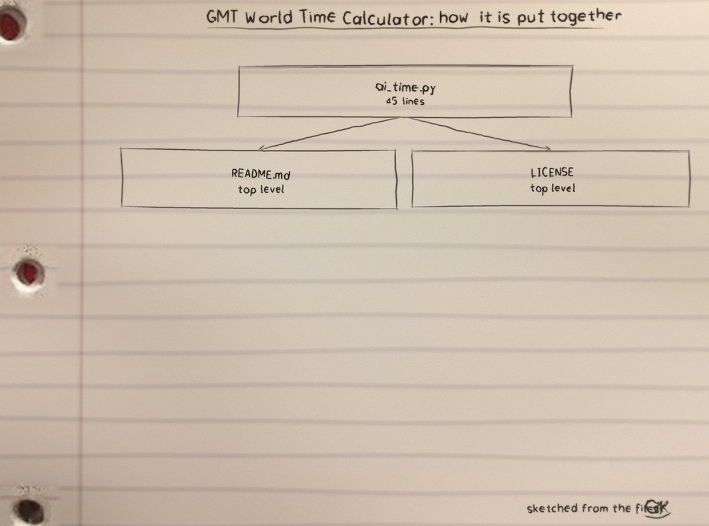
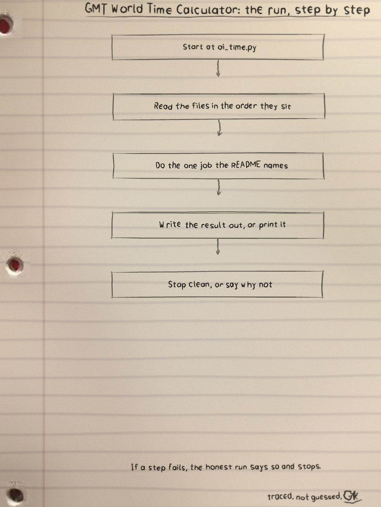
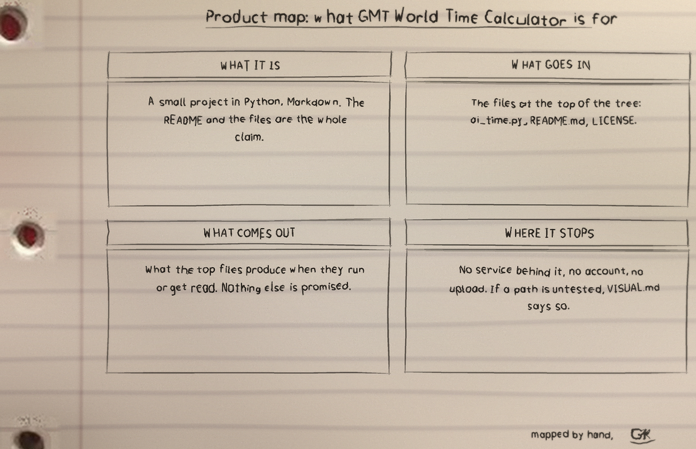

| Station one: Run it
python3 ai_time.pyPython 3, standard library only. Type a supported city at the Enter city: prompt, or exit to quit. Closing the input also ends the program cleanly.
| Station two: The eight stations of the clock
| City | Offset from UTC | Time figure style |
|---|---|---|
| BOSTON | minus 4 hours | --:--:-- |
| CHICAGO | minus 5 hours | --:--:-- |
| SEATTLE | minus 7 hours | --:--:-- |
| CAIRO | plus 2 hours | --:--:-- |
| KARACHI | plus 5 hours | --:--:-- |
| KOLKATA | plus 5 hours 30 minutes | --:--:-- |
| SHANGHAI | plus 8 hours | --:--:-- |
| TOKYO | plus 9 hours | --:--:-- |
Names match without regard to case or surrounding spaces, so tokyo and a padded Tokyo both work, and exit quits the same forgiving way. Any other city prints that city is not added, in the form <city> is not added, then shows the UTC time labelled GMT. The current program uses the CITY_OFFSETS table and UTC arithmetic.
| Station three: Honest limits
Times wrap correctly across midnight in both directions and the Kolkata half hour carries into the hour past 59 minutes. File list: ai_time.py, with time_for_city(city, now_utc) separated from the prompt loop for testing, test_ai_time.py run with python3 -m unittest, logo.png and banner.png, LICENSE under GPL-3.0.
| The sheets
The full set is the GMT-World-Time-Calculator-Visuals folder in the repo.


